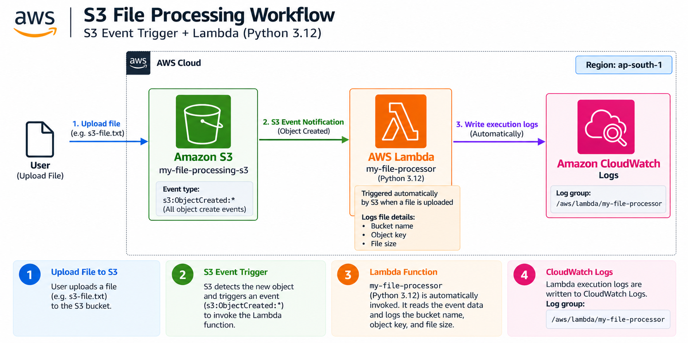
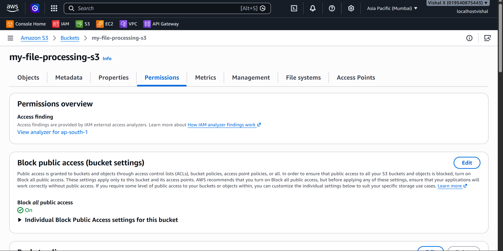
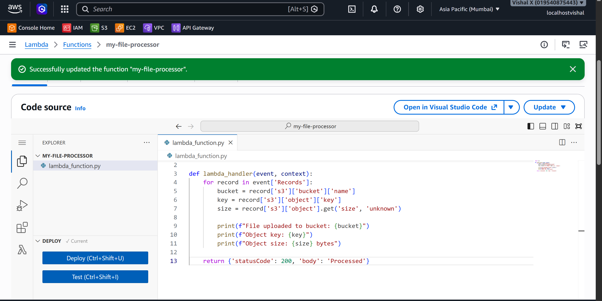
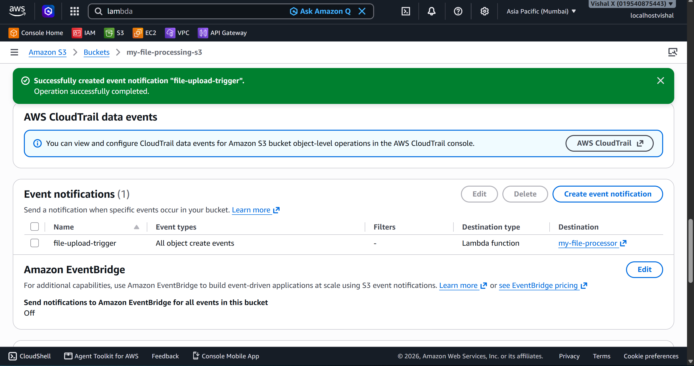
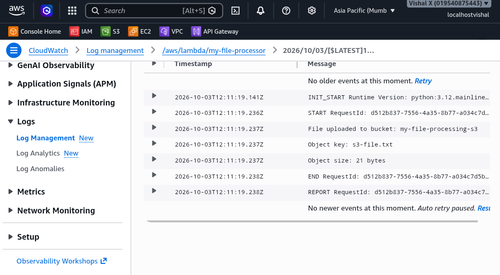
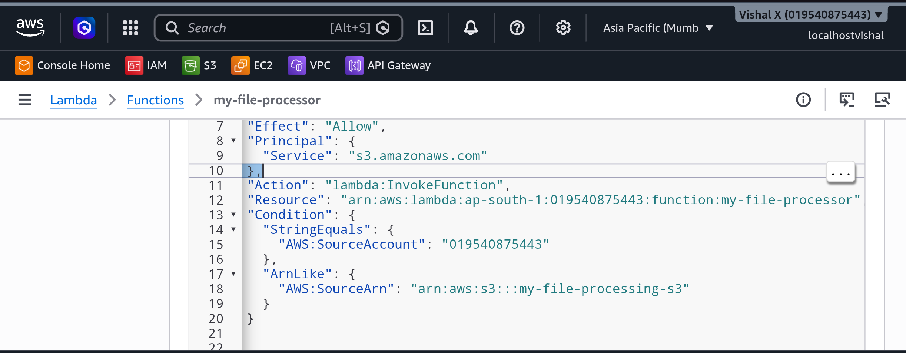

S3 File Processing Workflow
<<<<<<< Updated upstream Fifteenth project. Made Lambda react automatically to S3 events — when a file is uploaded to an S3 bucket, S3 fires an event that triggers a Lambda function. No polling, no cron jobs, just an automatic reaction. Set up the bucket, configured the event notification, wrote the Lambda function, and verified it through CloudWatch logs.
What I built
An event-driven file processing workflow. Upload a file to S3, Lambda fires automatically, logs the bucket name, object key, and file size to CloudWatch. The whole thing is triggered by the upload — nothing else needs to happen.
Fifteenth project. Wanted to see how Lambda reacts to S3 events automatically — upload a file, Lambda fires, no manual trigger needed. Set up the bucket, configured the event notification, wrote the function, and verified it through CloudWatch logs.
What I built
An event-driven file processing workflow. Upload a file to S3, Lambda fires automatically and logs the bucket name, object key, and file size to CloudWatch. Nothing else needs to happen — the upload is the trigger.
Stashed changes

Why S3 event triggers
<<<<<<< Updated upstream Lambda can be triggered by dozens of AWS services — S3 is one of the most common. The pattern is everywhere: a file lands in S3, Lambda processes it, the result goes somewhere else. Image resizing, CSV parsing, log processing, virus scanning — all of it works this way. This project was about understanding how the trigger mechanism works before building anything more complex on top of it. ======= Lambda can be triggered by dozens of AWS services and S3 is one of the most common. A file lands in S3, Lambda processes it, the result goes somewhere else — image resizing, CSV parsing, log processing. This project was about understanding how the trigger actually works before building anything more complex on top of it.
Stashed changes
Services used
| Service | What I used it for |
|---|---|
| S3 | Stores files and fires events when objects are created |
| Lambda | Automatically triggered by S3 events to process file metadata |
| CloudWatch Logs | Stores Lambda execution logs for verification |
Resources I created
| Resource | Value |
|---|---|
| Region | ap-south-1 |
| <<<<<<< Updated upstream | |
| S3 bucket | my-file-processing-s3 |
| Lambda function | my-file-processor |
| Event type | s3:ObjectCreated:* |
| Log group | /aws/lambda/my-file-processor |
| ======= | |
| S3 bucket | vishal-file-processing |
| Lambda function | vishal-file-processor |
| Event type | s3:ObjectCreated:* |
| Log group | /aws/lambda/vishal-file-processor |
| >>>>>>> Stashed changes |
Steps
1. Created the S3 bucket
- Open the S3 console
- Click Create bucket
- On the Create bucket page: <<<<<<< Updated upstream
-
Bucket name: my-file-processing-s3
- Bucket name: something globally unique (e.g.
my-file-processing-s3)Stashed changes
- Region: same region as the Lambda function
- Block all public access: leave enabled
- Leave everything else default
- Click Create bucket
<<<<<<< Updated upstream
📸 Screenshot required: S3 bucket created showing the bucket name and Block Public Access enabled
Stashed changes

2. Created the Lambda function
- Open the Lambda console
- Click Functions → Create function
- On the Create function page:
- Select Author from scratch
- Function name:
my-file-processor - Runtime: Python 3.12
- Permissions: Create a new role with basic Lambda permissions
- Click Create function
- In the code editor, replace the default code with:
import json
def lambda_handler(event, context):
for record in event['Records']:
bucket = record['s3']['bucket']['name']
key = record['s3']['object']['key']
size = record['s3']['object'].get('size', 'unknown')
print(f"File uploaded to bucket: {bucket}")
print(f"Object key: {key}")
print(f"Object size: {size} bytes")
return {'statusCode': 200, 'body': 'Processed'}
- Click Deploy
<<<<<<< Updated upstream
📸 Screenshot required: Lambda function code editor showing the S3 event handler deployed
Stashed changes

3. Configured the S3 event notification
- Open the S3 console → click the bucket name
- Click the Properties tab
- Scroll down to Event notifications → Create event notification
- On the Create event notification page:
- Event name:
file-upload-trigger - Event types: tick All object create events (
s3:ObjectCreated:*) - Destination: Lambda function
- Lambda function: select
my-file-processor - Click Save changes
S3 automatically adds a resource-based policy to the Lambda function allowing S3 to invoke it — no manual IAM step needed.
<<<<<<< Updated upstream
📸 Screenshot required: S3 bucket Properties tab showing the event notification configured with Lambda as the destination and event type s3:ObjectCreated:*
Stashed changes

<<<<<<< Updated upstream
4. Uploaded a test file and verified in CloudWatch
1. S3 → click the bucket → Upload → Add files → selected any s3-file.txt file → Upload
4. Uploaded a test file and verified in CloudWatch
- S3 → click the bucket → Upload → Add files → select any
.txtfile → UploadStashed changes
- Open the CloudWatch console
- In the left sidebar click Log groups
- Click
/aws/lambda/my-file-processor - Open the latest log stream
The log shows the bucket name, object key, and file size printed by the function — confirming Lambda was triggered automatically by the upload.
<<<<<<< Updated upstream
📸 Screenshot required: CloudWatch log stream showing the Lambda output with bucket name, object key, and file size from the upload
Stashed changes

5. Checked the Lambda resource-based policy
If Lambda is not triggered after uploading:
- Lambda → Functions → 'my-file-processor` → Configuration tab → Resource-based policy statements
- Confirm S3 has permission to invoke the function
- Also check: S3 bucket and Lambda must be in the same region
<<<<<<< Updated upstream
📸 Screenshot required: Lambda resource-based policy showing S3 has permission to invoke the function
Stashed changes

6. Cleaned up
- Lambda → Functions → tick
my-file-processor→ Actions → Delete → confirm - S3 → tick the bucket → Empty → confirm → then Delete → confirm
Screenshots
| # | File | Description |
|---|---|---|
| 01 | screenshots/01-s3-bucket.png |
S3 bucket created with Block Public Access enabled |
| 02 | screenshots/02-lambda-function.png |
Lambda function code showing the S3 event handler |
| 03 | screenshots/03-s3-event-notification.png |
S3 event notification configured with Lambda destination |
| 04 | screenshots/04-cloudwatch-logs.png |
CloudWatch logs showing bucket name, object key, and file size |
| 05 | screenshots/05-resource-policy.png |
Lambda resource-based policy showing S3 invoke permission |
Commands
<<<<<<< Updated upstream
Testing
- Uploaded a test file to the S3 bucket
- Verified Lambda was triggered automatically
- Confirmed CloudWatch logs showed the bucket name, object key, and file size
=======
Stashed changes
Things that can go wrong
| Problem | What caused it | How I fixed it |
|---|---|---|
| Lambda not triggered | Event notification not saved correctly | Re-checked S3 event notification configuration |
| Permission denied | S3 can't invoke Lambda | Checked Lambda resource-based policy statements |
| No logs in CloudWatch | Lambda not invoked at all | Verified the event notification points to the right function |
| Wrong region error | Bucket and Lambda in different regions | Used the same region for both |
Security considerations
<<<<<<< Updated upstream
- S3 bucket stays private — no public access needed for this workflow
- Lambda execution role only needs CloudWatch Logs write permission for this project
- If Lambda needs to read the file content, add s3:GetObject to the execution role
=======
- S3 bucket stays private — no public access needed
- Lambda execution role only needs CloudWatch Logs write permission here
- If Lambda needs to actually read the file content, add s3:GetObject to the execution role
Stashed changes
Cost
S3 event notifications are free. Lambda: first 1 million requests per month are free. S3 storage is minimal for test files. Delete the bucket and function after the exercise.
What I learned
- S3 can trigger Lambda automatically when files are uploaded — no polling needed
- The S3 event object passed to Lambda contains all the metadata about the uploaded file
- S3 automatically adds the Lambda invoke permission when configuring the event notification
- The bucket and Lambda function must be in the same region for the trigger to work
- This pattern is the foundation of serverless file processing pipelines <<<<<<< Updated upstream
=======
Stashed changes